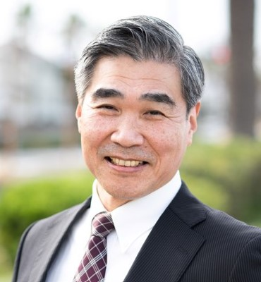

ライフプラン
これからの20年、30年をどう過ごしたいか。大切にしたいことを一緒に言葉にします。
- やりたいこと・暮らし方の整理
- 家族との時間、住まいの考え方
- 健康や介護への備え
定年前後の、これからの生き方相談
定年が近づくと、お金のこと、仕事のこと、暮らし方のことが一度に押し寄せます。山田伊智郎は、ライフプラン・マネープラン・キャリアプランをまとめて整理し、あなたが納得して次の一歩を踏み出せるようお手伝いします。
FP1級・CFP®・行政書士・国家資格キャリアコンサルタントがお金と仕事の両面からサポートします。
こんな迷いはありませんか
お金・仕事・暮らしは、別々には決められません。だから、まとめて相談できる場所が必要です。
サポート内容
「働き方を変えると収入はどうなるか」「やりたいことにいくら必要か」。それぞれのプランをつなげて考えることで、現実的で納得できる答えが見えてきます。
これからの20年、30年をどう過ごしたいか。大切にしたいことを一緒に言葉にします。
収入と支出の見通しを立て、安心して暮らせるお金の計画をつくります。
これまでの経験を棚卸しし、無理なく続けられる次の働き方を考えます。
お金の専門家には仕事の悩みを、仕事の相談先にはお金の悩みを話しにくいものです。FP1級・CFP®とキャリアコンサルタントの資格を持つ山田伊智郎は、マネーとキャリアの両面から一人ひとりの事情に合わせてサポートします。遺言や相続、各種手続きなど、行政書士としての知識も活かせます。
決めることが重なる時期
大切な判断が、数年のあいだに次々とやってきます。早めに全体を見渡しておくことで、慌てずに選べます。
役職定年や働き方の変化。定年後を考え始める時期。
多くの会社の定年。再雇用か、別の道か。年金の繰上げ受給も選べる年齢。
老齢年金の原則的な受給開始。会社の雇用確保義務もここまで。
会社には70歳までの就業機会確保の努力義務。働き続けるかの見直し時期。
年金の繰下げ受給を選べる上限。後期高齢者医療制度へ移行。
※ 制度の内容は2026年時点の一般的なものです。個別の状況は相談の中で確認します。
ご相談の流れ
今の状況、気になっていること、これからの希望をじっくりお聞きします。
家計、年金の見込み、これまでの経歴を一緒に見える形にします。
ライフ・マネー・キャリアをつなげた、あなただけの計画をまとめます。
計画どおりに進んでいるか、状況が変わったときも続けて相談に乗ります。

ご挨拶
ライフプラン・マネープラン・キャリアプラン相談
定年を前にした方の多くが、「このままでいいのか」という漠然とした不安を抱えています。けれど、その不安の正体を一つずつ整理していくと、やりたいこと、できることが見えてきます。
私は、お金と仕事の両方の視点から、あなたのこれからを一緒に考えるパートナーでありたいと思っています。正解を押しつけるのではなく、あなたが納得して選べるように。まずは気軽にお話しください。
ご相談のお申し込み
ご本人だけでなく、ご夫婦でのご相談も歓迎します。まだ考えがまとまっていなくても大丈夫です。お気軽にお電話ください。